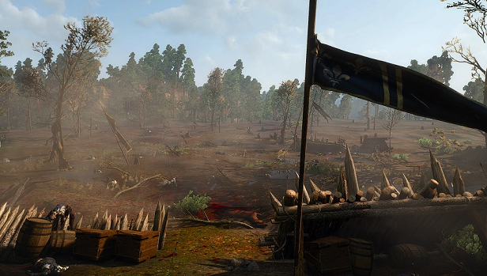

Část lesa zpustošená válkou dvou velkých říší, Nilfgaard a Temerie
Temerie byla jedním z nejmocnějších Severních království na kontinentu a díky úrodným polím, silné armádě a obchodním cestám patřila mezi nejbohatší státy severu.
Vládnul jí král Foltest, který byl známý svou tvrdou politikou, ale zároveň schopností držet zemi stabilní i během válek a politických krizí.
Temerie měla rozsáhlou síť hradů, opevněných měst a profesionálních vojáků, přičemž její elitní jednotky byly považovány za jedny z nejdisciplinovanějších na kontinentu.
Hlavním městem byla Vizima, centrum politiky, obchodu i intrik, kde se střetávaly zájmy šlechty, mágů a tajných služeb.
Po smrti Foltesta se však Temerie začala rozpadat kvůli vnitřním konfliktům, atentátům a rostoucímu tlaku Nilfgaardu, který chtěl sever definitivně ovládnout.
Nilfgaardské císařství bylo obrovskou jižní říší známou svou organizovaností, disciplinovanou armádou a neustálou expanzí do okolních zemí.
V čele říše stál císař Emhyr var Emreis, přezdívaný „Bílý plamen tančící na mohylách nepřátel“, který byl mimořádně inteligentní a bezohledný vládce.
Nilfgaard měl technologicky vyspělejší armádu než většina Severních království a často využíval špiony, diplomacii i ekonomický tlak ještě před samotnou válkou.
Obyvatelé říše věřili v nadřazenost nilfgaardské kultury a považovali severní státy za chaotické a zaostalé.
Díky své síle dokázal Nilfgaard postupně dobývat další území a stal se největší hrozbou pro celý sever kontinentu.
Hlavním důvodem konfliktů mezi Temerii a Nilfgaardem byla snaha císařství ovládnout Severní království a získat jejich bohatství, strategické pozice i obchodní cesty.
Temerie se dlouhou dobu stavěla jako jeden z hlavních obránců severu a její armáda bojovala v několika velkých válkách proti nilfgaardské invazi.
Nilfgaard používal nejen vojenskou sílu, ale i atentáty, špionáž a manipulaci, aby oslabil temerskou vládu zevnitř.
Po zavraždění krále Foltesta se Temerie dostala do chaosu, čehož Nilfgaard okamžitě využil k dalšímu postupu na sever.
Konflikt mezi oběma státy symbolizoval střet dvou odlišných světů — severní nezávislosti a tradic proti centralizované a expanzivní moci Nilfgaardského císařství.
Nilfgaardský tábor
Nilfgaardský vojenský tábor v Bělosadu působil mnohem organizovaněji a přísněji než většina severních vojenských ležení, protože vojáci císařství dodržovali tvrdou disciplínu a přesnou hierarchii.
Tábor byl postaven strategicky u cest a mostů, aby mohl kontrolovat pohyb obyvatel i obchodníků, což Nilfgaardu umožňovalo rychle upevňovat moc na obsazeném území.
Černé stany, znak zlatého slunce a těžce obrnění vojáci vytvářeli atmosféru strachu, protože místní obyvatelé věděli, že odpor proti císařství bývá tvrdě potlačen.
Přesto nilfgaardští důstojníci často udržovali větší pořádek než některé severní armády a trestali rabování nebo bezdůvodné násilí, pokud narušovalo disciplínu a obraz říše.
Vojáci v táboře byli vedeni k přesvědčení, že bojují za civilizaci a sjednocení kontinentu, takže mnozí z nich nevnímali své tažení jako obyčejnou válku, ale jako „vyšší poslání“ císařství.
Morálka Nilfgaardu byla založená hlavně na poslušnosti, efektivitě a víře v sílu císařství, nikoliv na rytířské cti, jak ji často chápaly severní státy.
Nilfgaardští vojáci byli vychováváni k tomu, aby obětovali vlastní potřeby ve prospěch říše a bez váhání plnili rozkazy nadřízených.
Bělosadské osady
Osady v okolí Bělosadu byly malé zemědělské vesnice obklopené poli, lesy a bažinami, kde lidé žili jednoduchým, ale velmi tvrdým životem.
Většina domů byla postavená ze dřeva a hlíny, střechy bývaly pokryté slámou a uvnitř často žilo několik generací jedné rodiny pohromadě.
Vesničané byli zvyklí na neustálý strach z války, monster i hladomoru, protože severní kraje byly často ničeny průchody armád a útoky banditů.
Lidé v osadách byli nedůvěřiví vůči cizincům, ale zároveň si navzájem pomáhali, protože přežití na kontinentu záviselo hlavně na spolupráci celé komunity.
Večer se obyvatelé scházeli v hospodách nebo kolem ohňů, kde si vyprávěli příběhy o zaklínačích, démonech a válkách mezi severem a Nilfgaardem.
Bělosadští vesničané byli většinou chudí rolníci, kteří celý život pracovali na polích a snažili se uživit své rodiny i během válek a špatných sklizní.
Mnozí z nich nenáviděli vojáky bez ohledu na to, zda šlo o Severany nebo Nilfgaard, protože armády často zabavovaly jídlo, dobytek a ničily jejich domovy.
Přestože žili v bídě, drželi se různých tradic, pověr a víry v bohy či lesní duchy, kteří podle nich mohli chránit úrodu i rodiny.
Vesničané často vnímali zaklínače s respektem i strachem zároveň, protože potřebovali jejich pomoc proti monstrům, ale báli se jejich chladného chování a mutací.
Život obyčejných lidí v Bělosadu ukazoval temnou realitu světa Zaklínače — zatímco králové a císaři bojovali o moc, největší utrpení vždy nesli právě obyčejní lidé.